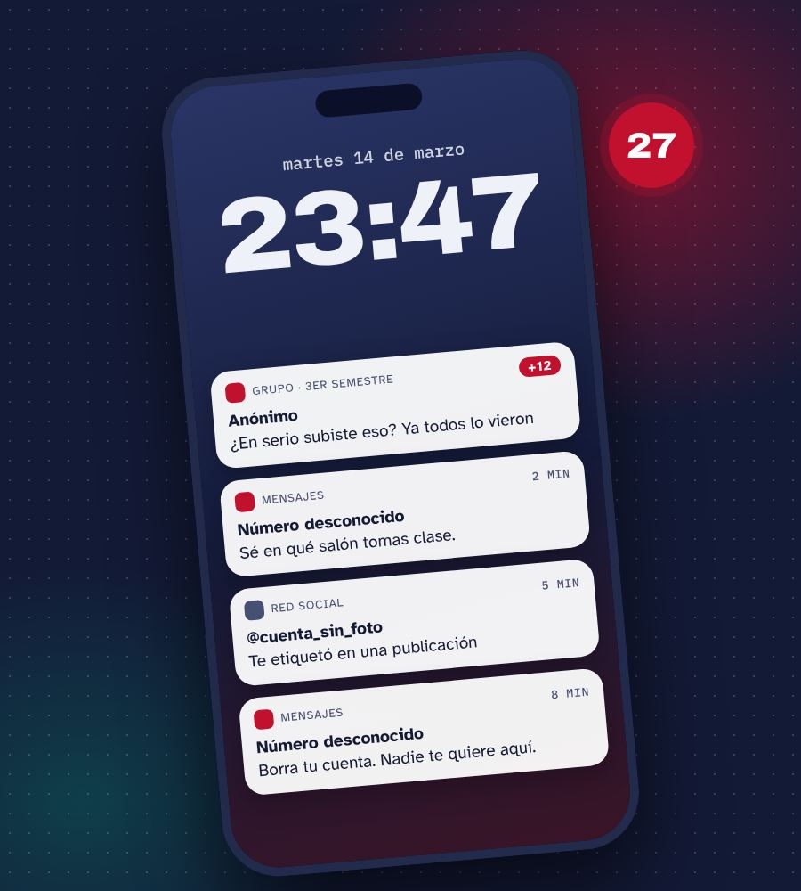
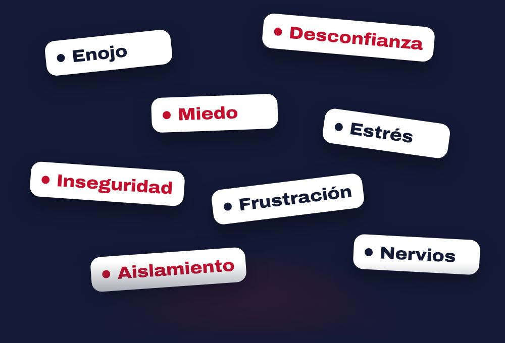
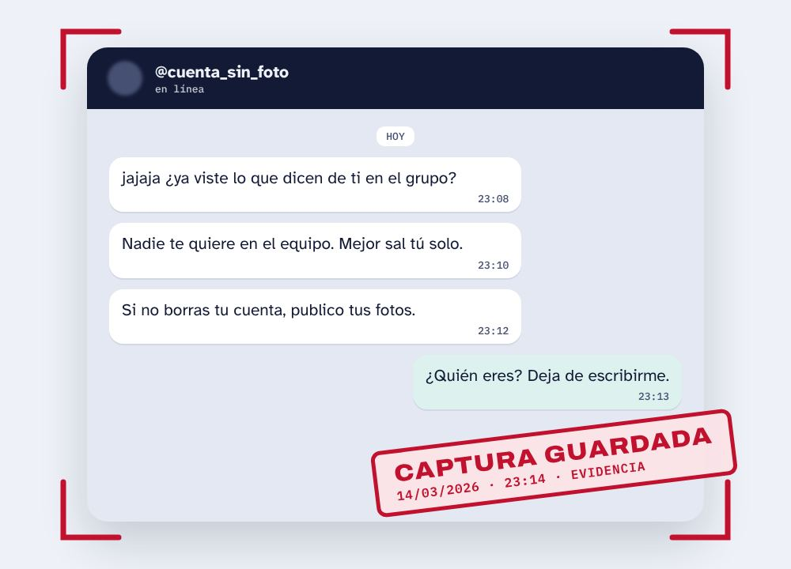
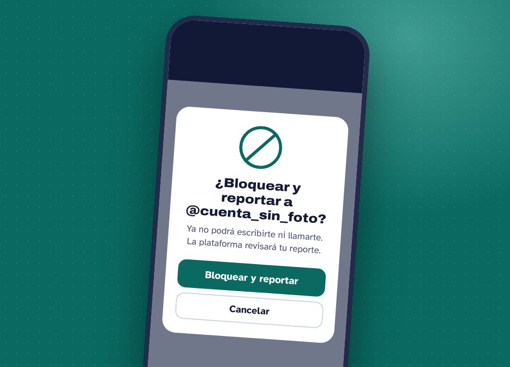

de las mujeres denunció
Y solo 8.6 % de los hombres, ante el Ministerio Público, la Fiscalía o la plataforma. Ante la policía: 2.2 % y 1.3 % (INEGI, 2025).
Lo que se escribe en un chat también lastima.
El ciberacoso es un acto intencional, de una persona o de un grupo, para dañar o molestar a alguien usando internet y otras tecnologías. Puede causar daños morales, psicológicos y económicos (INEGI, 2025).

Entre julio de 2023 y agosto de 2024, 18.9 millones de personas usuarias de internet de 12 años o más vivieron alguna situación de ciberacoso en México. Toca cada tarjeta para ver el detalle.
Porcentaje de víctimas que fue acosada por cada medio. Una persona puede marcar más de uno, por eso la suma pasa de 100 %. Fuente: INEGI (2025).
Las víctimas reportan emociones que siguen ahí cuando se apaga el celular. En casos graves, el ciberacoso se relaciona con depresión, autolesiones y hasta suicidio.

% de víctimas de cada sexo que reportó cada efecto · Fuente: INEGI (2025)
En un estudio con 662 estudiantes de la Universidad de Guadalajara (18 a 25 años), solo 23.4 % nunca había sido víctima de ciberacoso (Vargas Jiménez et al., 2019).
“Desde las autolesiones hasta el suicidio, hemos visto cómo el ciberacoso, en todas sus formas, puede devastar la vida de las y los jóvenes y de sus familias.”
Hans Kluge, director regional de la OMS para Europa (OMS Europa, 2024). Traducción propia.
El ciberacoso no afecta solo a una persona. Cuando casi nadie denuncia y el agresor se esconde detrás de una cuenta falsa, la violencia queda impune y los espacios digitales donde estudiamos y convivimos se vuelven inseguros.
Y solo 8.6 % de los hombres, ante el Ministerio Público, la Fiscalía o la plataforma. Ante la policía: 2.2 % y 1.3 % (INEGI, 2025).
El anonimato hace difícil identificar y sancionar a quien acosa, y genera desconfianza en las redes (INEGI, 2025).
vivió ciberacoso en 44 países de Europa, Asia Central y Canadá. La cifra subió desde 2018 en niños (12 % a 15 %) y en niñas (13 % a 16 %) (OMS Europa, 2024).
pasan algunos jóvenes. Con tanto tiempo conectados, un pequeño aumento del acoso afecta a miles de personas (OMS Europa, 2024).
Enojo, miedo, desconfianza y, en casos severos, depresión.
Menos sentido de pertenencia al grupo y menos apoyo percibido. En México, 61.6 % de las víctimas de 12 a 17 años fue acosada por alguien de su misma edad.
Pocas denuncias, impunidad y redes donde la violencia se normaliza.
Un video corto con los datos clave y una pieza de audio que muestra cómo se siente una bandeja de mensajes que no para.
Animación propia con datos de INEGI (2025). Incluye subtítulos en español.
Paisaje sonoro original. Usa audífonos y empieza con el volumen bajo.
La OMS y la investigación con universitarios coinciden: el ciberacoso se atiende entre todos, con la persona afectada, quienes lo presencian, la familia, la escuela, las plataformas y las autoridades.


Escanea el código para consultar los datos oficiales del INEGI, o abre el reporte aquí.
Si estás en peligro inmediato, llama al 911.
| Texto #131A36 sobre #EEF1F7 | 15.11:1 |
| Texto #465072 sobre #FFFFFF | 7.92:1 |
| Rojo #C1112E sobre #EEF1F7 | 5.48:1 |
| Blanco sobre #C1112E | 6.20:1 |
| Blanco sobre #0A6A62 | 6.46:1 |
| Rosa #FF8A9B sobre #131A36 | 7.62:1 |
| Texto #C9CFE0 sobre #131A36 | 10.97:1 |